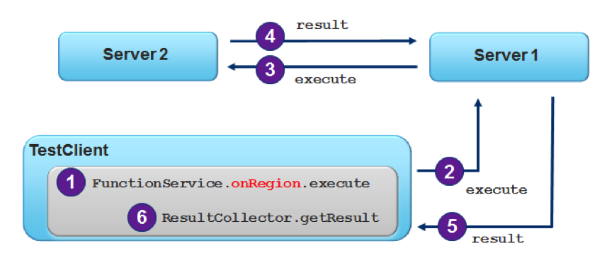

In this lab, you will gain hands-on experience working with executing server-side functions from a GemFire client cache. In the prior lab, you gained experience writing and registering and testing a function that provides generic summation capabilities. For this lab, that function has already been created and registered on the server. You task in this lab is to set up the client with the necessary configuration and programming to enable the client to call this function and process the result.
The basic execution flow is illustrated below.
|  |
What you will learn
How to execute functions on the server
How to process results from execution
Estimated completion time: 30 minutes
Instructions for this lab are divided into specific sections. Each section describes the steps to perform specific tasks.
To begin, you will be making the necessary modifications to enable client to perform PDX Serialization.
(TODO-01) To begin, open the
clientCache.xml file and add the necessary configuration to
enable PDX Serialization using the
ReflectionBasedAutoSerializer. On the client side, you will
NOT request read serialized.
(TODO-02) In the same XML file and in the PDX configuration,
add additional configuration to define the appropriate classes to serialize. These
will be BookOrder and BookOrderItem.
In this section, you will be implementing a custom Result
Collector. The purpose of this custom result collector is to take all the sum
values sent by each member executing the function and provide a final sum representing the
aggregate sum of the specified field for all data in all members hosting the partitioned region.
(TODO-03) Next, open the
SummingResultCollector class in the
com.gopivotal.bookshop.buslogic package. You will need to add a class field to hold
the results. If necessary, open the GenericSummingFunction
class, provided in this project for reference, and take note of the type used to send
results. If you think about what is trying to be accomplished, the objective is to
have one final sum amount to return to the caller once all results have been returned
from the members executing the function. Define the variable and initialize it
now.
(TODO-04) Next, go to the addResult()
method and implement the functionality for what means to add a result to the current
results.
(TODO-05) Next, locate the
clearResults() method and implement the functionality for
what it means to clear results.
(TODO-06) Finally, locate the
getResults() method and implement this functionality.
Recall that this is the method used to provide the final results back to the client
caller.
In this section, you will be writing the necessary client code to execute a function that has already been registered on the server and leveraging the result collector you just defined. Use the following steps to complete this section.
(TODO-07) Open the SummingTests test class.
Locate the shouldComputeTotalForAllOrders() method and add
code that defines the Function execution. To do this, you will define an
onRegion() type function call on the
BookOrder region and you will be passing an argument in to
perform the sum on the field called totalPrice and use the custom
ResultCollector called
SummingResultCollector.
Also in this step, add a call to execute the function by name (which should
include the package and class). This call returns a
ResultCollector, which you should assign to a variable so you
can use it in the next step.
(TODO-08) With the result collector, call the method to get the
results. This result should be a single object. Refer to the
SummingResultCollector to see what type is returned and
assign to a variable of that type. Assert that the result returned is equal to the
amount 93.95.
![[Note]](images/note.png) | Note |
|---|---|
Due to typical rounding errors that can happen with
|
In this section, you will be running the test code you just finished writing to verify correct implementation of both the execution part as well as the result collector part. Before beginning this section, you will need the locator and servers running. If they are still running from the server functions lab, you can use them and ignore step 1 below. Otherwise, use the following steps to complete this lab.
Make sure the server and locator are running by using the
server-bootstrap project
scripts/startServerPartitioned.sh or
scripts/startServerPartitioned.bat scripts.
| Note |
|---|---|
Due to the specific requirements for this lab, it is important that the
GemFire servers be running using the startup configuration from the server
functions lab or by running the script described above. If neither of these is
true or you are uncertain, the simplest thing to do is stop all GemFire processes
and use one of the start scripts in the |
(TODO-09) Finally, run SummingTests to verify all is
working correctly. You may not see any output except a notification that the cache is
closing.
Congratulations! You've completed this lab.